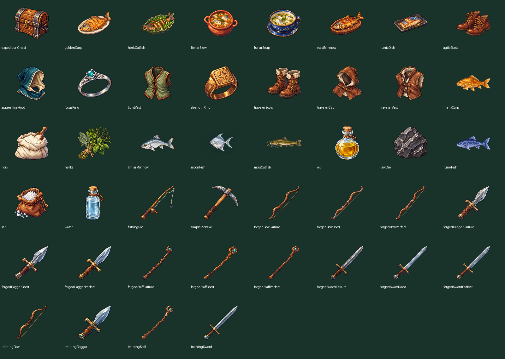

Dungeon Teacher · 44 sprites de inventário
Fase B · PNG 128 × 128 com transparência. Todos os IDs reais têm arte própria. A aprovação humana final do catálogo permanece pendente. Os slots do jogo mantêm 56 × 56; a comparação abaixo mostra auto e pixelated.
Baixar PNGs · Relatório · Sete designs: 64 versus 128 · Inventário real
Folha de contato

Baú
expeditionChest · Baú · PNG RGBA 128 × 128128 px · escuro128 px · claroSlot 56 px · autoSlot 56 px · pixelatedAmpliação 2×SVG anterior · 56 px Carpa Dourada
goldenCarp · Comidas · PNG RGBA 128 × 128128 px · escuro128 px · claroSlot 56 px · autoSlot 56 px · pixelatedAmpliação 2×SVG anterior · 56 px Bagre com Ervas
herbCatfish · Comidas · PNG RGBA 128 × 128128 px · escuro128 px · claroSlot 56 px · autoSlot 56 px · pixelatedAmpliação 2×SVG anterior · 56 px Ensopado do Limiar
limiarStew · Comidas · PNG RGBA 128 × 128128 px · escuro128 px · claroSlot 56 px · autoSlot 56 px · pixelatedAmpliação 2×SVG anterior · 56 px Sopa Lunar
lunarSoup · Comidas · PNG RGBA 128 × 128128 px · escuro128 px · claroSlot 56 px · autoSlot 56 px · pixelatedAmpliação 2×SVG anterior · 56 px Lambari Assado
roastMinnow · Comidas · PNG RGBA 128 × 128128 px · escuro128 px · claroSlot 56 px · autoSlot 56 px · pixelatedAmpliação 2×SVG anterior · 56 px Prato Rúnico
runicDish · Comidas · PNG RGBA 128 × 128128 px · escuro128 px · claroSlot 56 px · autoSlot 56 px · pixelatedAmpliação 2×SVG anterior · 56 px Botas Ágeis
agileBoots · Equipamentos · PNG RGBA 128 × 128128 px · escuro128 px · claroSlot 56 px · autoSlot 56 px · pixelatedAmpliação 2×SVG anterior · 56 px Capuz do Aprendiz
apprenticeHood · Equipamentos · PNG RGBA 128 × 128128 px · escuro128 px · claroSlot 56 px · autoSlot 56 px · pixelatedAmpliação 2×SVG anterior · 56 px Anel de Foco
focusRing · Equipamentos · PNG RGBA 128 × 128128 px · escuro128 px · claroSlot 56 px · autoSlot 56 px · pixelatedAmpliação 2×SVG anterior · 56 px Colete Leve
lightVest · Equipamentos · PNG RGBA 128 × 128128 px · escuro128 px · claroSlot 56 px · autoSlot 56 px · pixelatedAmpliação 2×SVG anterior · 56 px Anel de Força
strengthRing · Equipamentos · PNG RGBA 128 × 128128 px · escuro128 px · claroSlot 56 px · autoSlot 56 px · pixelatedAmpliação 2×SVG anterior · 56 px Botas do Viajante
travelerBoots · Equipamentos · PNG RGBA 128 × 128128 px · escuro128 px · claroSlot 56 px · autoSlot 56 px · pixelatedAmpliação 2×SVG anterior · 56 px Capuz do Viajante
travelerCap · Equipamentos · PNG RGBA 128 × 128128 px · escuro128 px · claroSlot 56 px · autoSlot 56 px · pixelatedAmpliação 2×SVG anterior · 56 px Colete do Viajante
travelerVest · Equipamentos · PNG RGBA 128 × 128128 px · escuro128 px · claroSlot 56 px · autoSlot 56 px · pixelatedAmpliação 2×SVG anterior · 56 px Carpa dos Vaga-lumes
fireflyCarp · Recursos e ingredientes · PNG RGBA 128 × 128128 px · escuro128 px · claroSlot 56 px · autoSlot 56 px · pixelatedAmpliação 2×SVG anterior · 56 px Farinha
flour · Recursos e ingredientes · PNG RGBA 128 × 128128 px · escuro128 px · claroSlot 56 px · autoSlot 56 px · pixelatedAmpliação 2×SVG anterior · 56 px Ervas
herbs · Recursos e ingredientes · PNG RGBA 128 × 128128 px · escuro128 px · claroSlot 56 px · autoSlot 56 px · pixelatedAmpliação 2×SVG anterior · 56 px Lambari do Limiar
limiarMinnow · Recursos e ingredientes · PNG RGBA 128 × 128128 px · escuro128 px · claroSlot 56 px · autoSlot 56 px · pixelatedAmpliação 2×SVG anterior · 56 px Peixe-Lua
moonFish · Recursos e ingredientes · PNG RGBA 128 × 128128 px · escuro128 px · claroSlot 56 px · autoSlot 56 px · pixelatedAmpliação 2×SVG anterior · 56 px Bagre Musgoso
mossCatfish · Recursos e ingredientes · PNG RGBA 128 × 128128 px · escuro128 px · claroSlot 56 px · autoSlot 56 px · pixelatedAmpliação 2×SVG anterior · 56 px Óleo
oil · Recursos e ingredientes · PNG RGBA 128 × 128128 px · escuro128 px · claroSlot 56 px · autoSlot 56 px · pixelatedAmpliação 2×SVG anterior · 56 px Minério Bruto
rawOre · Recursos e ingredientes · PNG RGBA 128 × 128128 px · escuro128 px · claroSlot 56 px · autoSlot 56 px · pixelatedAmpliação 2×SVG anterior · 56 px Peixe Rúnico
runeFish · Recursos e ingredientes · PNG RGBA 128 × 128128 px · escuro128 px · claroSlot 56 px · autoSlot 56 px · pixelatedAmpliação 2×SVG anterior · 56 px Sal
salt · Recursos e ingredientes · PNG RGBA 128 × 128128 px · escuro128 px · claroSlot 56 px · autoSlot 56 px · pixelatedAmpliação 2×SVG anterior · 56 px Água
water · Recursos e ingredientes · PNG RGBA 128 × 128128 px · escuro128 px · claroSlot 56 px · autoSlot 56 px · pixelatedAmpliação 2×SVG anterior · 56 px Vara de Pesca
fishingRod · Ferramentas · PNG RGBA 128 × 128128 px · escuro128 px · claroSlot 56 px · autoSlot 56 px · pixelatedAmpliação 2×SVG anterior · 56 px Picareta Simples
simplePickaxe · Ferramentas · PNG RGBA 128 × 128128 px · escuro128 px · claroSlot 56 px · autoSlot 56 px · pixelatedAmpliação 2×SVG anterior · 56 px Arco Forjado — Inferior
forgedBowFailure · Armas · PNG RGBA 128 × 128128 px · escuro128 px · claroSlot 56 px · autoSlot 56 px · pixelatedAmpliação 2×SVG anterior · 56 px Arco Forjado
forgedBowGood · Armas · PNG RGBA 128 × 128128 px · escuro128 px · claroSlot 56 px · autoSlot 56 px · pixelatedAmpliação 2×SVG anterior · 56 px Arco Forjado — Superior
forgedBowPerfect · Armas · PNG RGBA 128 × 128128 px · escuro128 px · claroSlot 56 px · autoSlot 56 px · pixelatedAmpliação 2×SVG anterior · 56 px Adaga Forjada — Inferior
forgedDaggerFailure · Armas · PNG RGBA 128 × 128128 px · escuro128 px · claroSlot 56 px · autoSlot 56 px · pixelatedAmpliação 2×SVG anterior · 56 px Adaga Forjada
forgedDaggerGood · Armas · PNG RGBA 128 × 128128 px · escuro128 px · claroSlot 56 px · autoSlot 56 px · pixelatedAmpliação 2×SVG anterior · 56 px Adaga Forjada — Superior
forgedDaggerPerfect · Armas · PNG RGBA 128 × 128128 px · escuro128 px · claroSlot 56 px · autoSlot 56 px · pixelatedAmpliação 2×SVG anterior · 56 px Cajado Forjado — Inferior
forgedStaffFailure · Armas · PNG RGBA 128 × 128128 px · escuro128 px · claroSlot 56 px · autoSlot 56 px · pixelatedAmpliação 2×SVG anterior · 56 px Cajado Forjado
forgedStaffGood · Armas · PNG RGBA 128 × 128128 px · escuro128 px · claroSlot 56 px · autoSlot 56 px · pixelatedAmpliação 2×SVG anterior · 56 px Cajado Forjado — Superior
forgedStaffPerfect · Armas · PNG RGBA 128 × 128128 px · escuro128 px · claroSlot 56 px · autoSlot 56 px · pixelatedAmpliação 2×SVG anterior · 56 px Espada Forjada — Inferior
forgedSwordFailure · Armas · PNG RGBA 128 × 128128 px · escuro128 px · claroSlot 56 px · autoSlot 56 px · pixelatedAmpliação 2×SVG anterior · 56 px Espada Forjada
forgedSwordGood · Armas · PNG RGBA 128 × 128128 px · escuro128 px · claroSlot 56 px · autoSlot 56 px · pixelatedAmpliação 2×SVG anterior · 56 px Espada Forjada — Superior
forgedSwordPerfect · Armas · PNG RGBA 128 × 128128 px · escuro128 px · claroSlot 56 px · autoSlot 56 px · pixelatedAmpliação 2×SVG anterior · 56 px Arco de Treino
trainingBow · Armas · PNG RGBA 128 × 128128 px · escuro128 px · claroSlot 56 px · autoSlot 56 px · pixelatedAmpliação 2×SVG anterior · 56 px Adaga de Treino
trainingDagger · Armas · PNG RGBA 128 × 128128 px · escuro128 px · claroSlot 56 px · autoSlot 56 px · pixelatedAmpliação 2×SVG anterior · 56 px Cajado de Treino
trainingStaff · Armas · PNG RGBA 128 × 128128 px · escuro128 px · claroSlot 56 px · autoSlot 56 px · pixelatedAmpliação 2×SVG anterior · 56 px Espada de Treino
trainingSword · Armas · PNG RGBA 128 × 128128 px · escuro128 px · claroSlot 56 px · autoSlot 56 px · pixelatedAmpliação 2×SVG anterior · 56 px Sete designs preservados — originais recuperados
128 px foram produzidos dos originais grandes, sem ampliar os arquivos de 64 px. Redução Lanczos escolhida após comparação com nearest e box.
Espada de Treino
Arquivo anterior 64 · ampliado 2×Novo arquivo 128 · nativo Adaga de Treino
Arquivo anterior 64 · ampliado 2×Novo arquivo 128 · nativo Arco de Treino
Arquivo anterior 64 · ampliado 2×Novo arquivo 128 · nativo Cajado de Treino
Arquivo anterior 64 · ampliado 2×Novo arquivo 128 · nativo Colete do Viajante
Arquivo anterior 64 · ampliado 2×Novo arquivo 128 · nativo Lambari do Limiar
Arquivo anterior 64 · ampliado 2×Novo arquivo 128 · nativo Óleo
Arquivo anterior 64 · ampliado 2×Novo arquivo 128 · nativo Comparação dos três métodos de reduçãoCapturas reais
 inventory-full
inventory-full inventory-comparison
inventory-comparison inventory-equipment
inventory-equipment inventory-online
inventory-online rendering-auto
rendering-auto rendering-pixelated
rendering-pixelated inventory-after-process-restart
inventory-after-process-restart